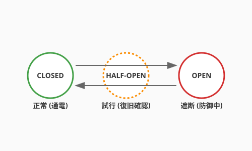

どれほど強固な石造りの城も、未曾有の大地震には勝てないかもしれません。 ソフトウェアの世界でも、100%の稼働を保証することは不可能です。ネットワークは途切れ、クラウドのサーバーは突然死に、外部APIは予告なく停止します。
そんな「予期せぬ不幸」が起きた時、システムはガシャガシャと音を立てて崩れ落ちるしかないのでしょうか？
アルケミスト（エンジニア）の答えは「NO」です。 私たちは、システムにレジリエンス（回復力・弾力性）という「守護の霊薬」を投与することができます。それは、嵐の中で折れる樫の木ではなく、風をしなやかに受け流し、折れてもまた伸びる柳のような強さです。

まず、マインドセットを切り替えましょう。 「いかに故障を防ぐか」ではなく、「故障は必ず起きる。起きた時にいかに被害を最小限に抑え、素早く立ち直るか」を考えます。
この「Design for Failure（失敗を前提とした設計）」こそが、大規模なシステムを支える哲学です。錬金術師が実験の失敗を糧に真理に近づくように、私たちもシステムの不完全さを前提に、より高次の安定を目指します。
QuestForgeが「外部のドラゴン討伐API」と連携しているとしましょう。ある日、このAPIが故障して応答しなくなりました。 そのまま呼び出し続けると、QuestForgeのサーバーまで応答待ちの列（渋滞）で埋め尽くされ、ついにはアプリ全体が沈没してしまいます。
これを防ぐのがCircuit Breaker（サーキットブレーカー）という「遮断の結界」です。 電気のブレーカーと同じように、不調な部品への接続を一時的に「遮断（Open）」します。
これにより、一部の不調がシステム全体に波及するのを防ぎます。「一部が壊れても、他の機能（冒険者の持ち物確認など）は動き続ける」という、しなやかな強さの第一歩です。
システムのレジリエンスを確かめる最も過激で効果的な方法。それが、カオスエンジニアリングです。 これは、本番環境であえてサーバーを止めたり、ネットワークを遅延させたりして、システムが正しく耐えられるかをテストするという手法です。
「狂気の沙汰だ！」と思うかもしれません。 しかし、あえて小さな「毒（混乱）」を摂取することで、チームは「いつ障害が起きても大丈夫だ」という絶対的な自信を得ることができます。これは、本番環境という過酷な戦場に向けた、システムの「予防接種」なのです。
現代のプラットフォーム（Kubernetesなど）には、異常なコンテナを自動的に再起動したり、負荷に応じてサーバーを増設（オートスケーリング）したりする機能が備わっています。
人間が夜中に叩き起こされて再起動ボタンを押すのではなく、システムが自ら「あ、ここが不調だな、新しく作り直そう」と判断して修復する。この自己修復能力こそが、自律した「生命体」としてのソフトウェアの完成形です。
カオスを恐れるのではなく、カオスを友とする。 不確実な世界で、あなたのソフトウェアがしなやかに、そして力強く生き抜くための盾を作りましょう。
この節で学んだことを実践するためのプロンプト：
マイクロサービスアーキテクチャにおいて「Circuit Breaker」を導入するメリットと、
それがなかった場合に起きる「カスケード失敗（連鎖的な障害）」のシナリオを、
QuestForgeのようなRPGアプリを例に挙げて、中学生でも分かるように説明してください。Pythonのライブラリ（例：tenacityやresilience4jの概念）を使って、
外部API呼び出しに「リトライ処理」と「指数バックオフ（Exponential Backoff）」を
実装するサンプルコードを書いてください。